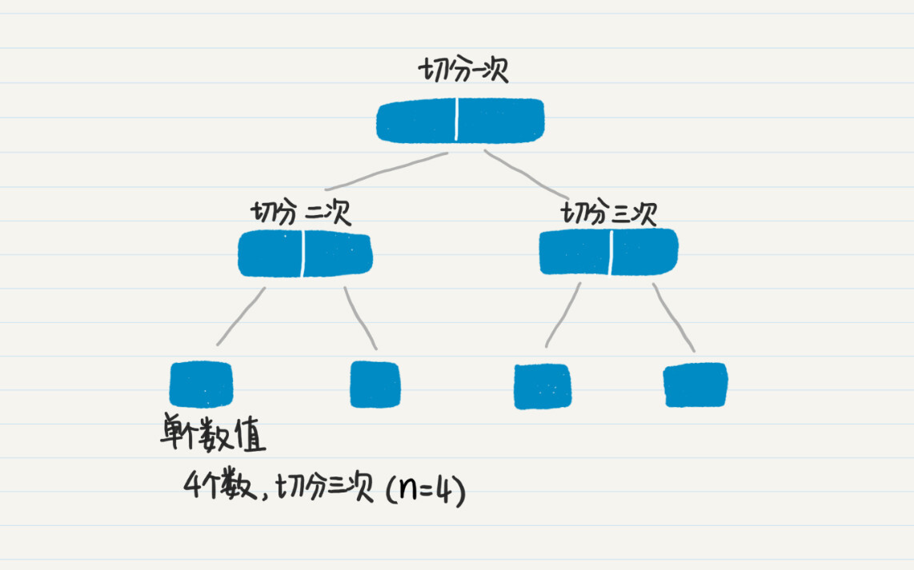
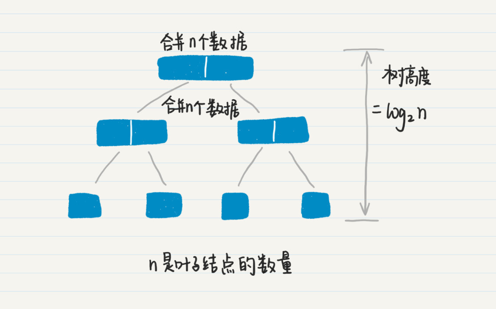
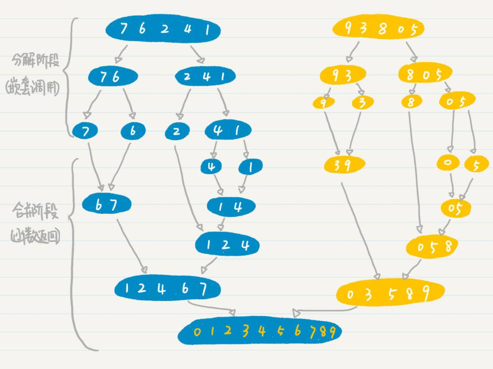
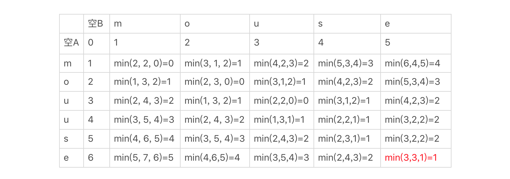

- 01 二进制：不了解计算机的源头，你学什么编程.md
- 02 余数：原来取余操作本身就是个哈希函数.md
- 03 迭代法：不用编程语言的自带函数，你会如何计算平方根？.md
- 04 数学归纳法：如何用数学归纳提升代码的运行效率？.md
- 05 递归（上）：泛化数学归纳，如何将复杂问题简单化？.md
- 06 递归（下）：分而治之，从归并排序到MapReduce.md
- 07 排列：如何让计算机学会“田忌赛马”？.md
- 08 组合：如何让计算机安排世界杯的赛程？.md
- 09 动态规划（上）：如何实现基于编辑距离的查询推荐？.md
- 10 动态规划（下）：如何求得状态转移方程并进行编程实现？.md
- 11 树的深度优先搜索（上）：如何才能高效率地查字典？.md
- 12 树的深度优先搜索（下）：如何才能高效率地查字典？.md
- 13 树的广度优先搜索（上）：人际关系的六度理论是真的吗？.md
- 14 树的广度优先搜索（下）：为什么双向广度优先搜索的效率更高？.md
- 15 从树到图：如何让计算机学会看地图？.md
- 16 时间和空间复杂度（上）：优化性能是否只是“纸上谈兵”？.md
- 17 时间和空间复杂度（下）：如何使用六个法则进行复杂度分析？.md
- 18 总结课：数据结构、编程语句和基础算法体现了哪些数学思想？.md
- 19 概率和统计：编程为什么需要概率和统计？.md
- 20 概率基础（上）：一篇文章帮你理解随机变量、概率分布和期望值.md
- 21 概率基础（下）：联合概率、条件概率和贝叶斯法则，这些概率公式究竟能做什么？.md
- 22 朴素贝叶斯：如何让计算机学会自动分类？.md
- 23 文本分类：如何区分特定类型的新闻？.md
- 24 语言模型：如何使用链式法则和马尔科夫假设简化概率模型？.md
- 25 马尔科夫模型：从PageRank到语音识别，背后是什么模型在支撑？.md
- 26 信息熵：如何通过几个问题，测出你对应的武侠人物？.md
- 27 决策树：信息增益、增益比率和基尼指数的运用.md
- 28 熵、信息增益和卡方：如何寻找关键特征？.md
- 29 归一化和标准化：各种特征如何综合才是最合理的？.md
- 30 统计意义（上）：如何通过显著性检验，判断你的A_B测试结果是不是巧合？.md
- 31 统计意义（下）：如何通过显著性检验，判断你的A_B测试结果是不是巧合？.md
- 32 概率统计篇答疑和总结：为什么会有欠拟合和过拟合？.md
- 33 线性代数：线性代数到底都讲了些什么？.md
- 34 向量空间模型：如何让计算机理解现实事物之间的关系？.md
- 35 文本检索：如何让计算机处理自然语言？.md
- 36 文本聚类：如何过滤冗余的新闻？.md
- 37 矩阵（上）：如何使用矩阵操作进行PageRank计算？.md
- 38 矩阵（下）：如何使用矩阵操作进行协同过滤推荐？.md
- 39 线性回归（上）：如何使用高斯消元求解线性方程组？.md
- 40 线性回归（中）：如何使用最小二乘法进行直线拟合？.md
- 41 线性回归（下）：如何使用最小二乘法进行效果验证？.md
- 42 PCA主成分分析（上）：如何利用协方差矩阵来降维？.md
- 43 PCA主成分分析（下）：为什么要计算协方差矩阵的特征值和特征向量？.md
- 44 奇异值分解：如何挖掘潜在的语义关系？.md
- 45 线性代数篇答疑和总结：矩阵乘法的几何意义是什么？.md
- 46 缓存系统：如何通过哈希表和队列实现高效访问？.md
- 47 搜索引擎（上）：如何通过倒排索引和向量空间模型，打造一个简单的搜索引擎？.md
- 48 搜索引擎（下）：如何通过查询的分类，让电商平台的搜索结果更相关？.md
- 49 推荐系统（上）：如何实现基于相似度的协同过滤？.md
- 50 推荐系统（下）：如何通过SVD分析用户和物品的矩阵？.md
- 51 综合应用篇答疑和总结：如何进行个性化用户画像的设计？.md
- 导读：程序员应该怎么学数学？.md
- 开篇词 作为程序员，为什么你应该学好数学？.md
- 数学专栏课外加餐（一） 我们为什么需要反码和补码？.md
- 数学专栏课外加餐（三）：程序员需要读哪些数学书？.md
- 数学专栏课外加餐（二） 位操作的三个应用实例.md
- 结束语 从数学到编程，本身就是一个很长的链条.md
16 时间和空间复杂度（上）：优化性能是否只是“纸上谈兵”？
你好，我是黄申。
作为程序员，你一定非常清楚复杂度分析对编码的重要性。计算机系统从最初的设计、开发到最终的部署，要经过很多的步骤，而影响系统性能的因素有很多。我把这些因素分为三大类：算法理论上的计算复杂度、开发实现的方案和硬件设备的规格。
如果将整个系统的构建比作生产汽车，那么计算复杂度相当于在蓝图设计阶段，对整个汽车的性能进行评估。如果我们能够进行准确的复杂度分析，那么就能从理论上预估汽车的各项指标，避免生产出一辆既耗油又开得很慢的汽车。
可是，你也常常会发现，要准确地分析复杂度并不容易。这一讲，我来说说如何使用数学的思维，来进行系统性的复杂度分析。
基本概念
我先带你简短回顾一下几个重要概念，便于你稍后更好地理解本节的内容。
算法复杂度是一个比较抽象的概念，通常只是一个估计值，它用于衡量程序在运行时所需要的资源，用于比较不同算法的性能好坏。同一段代码处理不同的输入数据所消耗的资源也可能不同，所以分析复杂度时，需要考虑三种情况，最差情况、最好情况和平均情况。
复杂度分析会考虑性能的各个方面，不过我们最关注的是两个部分，时间和空间。时间因素是指程序执行的耗时多少，空间因素是程序占用内存或磁盘存储的多少。因此，我们把复杂度进一步细分为时间复杂度和空间复杂度。
我们通常所说的时间复杂度是指渐进时间复杂度，表示程序运行时间随着问题复杂度增加而变化的规律。同理，空间复杂度是指渐进空间复杂度，表示程序所需要的存储空间随着问题复杂度增加而变化的规律。我们可以使用大O来表示两者。
我这里不会讲太多的基本概念，而是通过数学的思维，总结一些比较通用的方法和规则，帮助你快速、准确地进行复杂度分析。
6个通用法则
复杂度分析有时看上去很难，其实呢，我们只要通过一定的方法进行系统性的分析，就能得找正确的结论。我通过自身的一些经验，总结了6个法则，相信它们对你会很有帮助。
1.四则运算法则
对于时间复杂度，代码的添加，意味着计算机操作的增加，也就是时间复杂度的增加。如果代码是平行增加的，就是加法。如果是循环、嵌套或者函数的嵌套，那么就是乘法。
比如二分查找的代码中，第一步是对长度为n的数组排序，第二步是在这个已排序的数组中进行查找。这两个部分是平行的，所以计算时间复杂度时可以使用加法。第一步的时间复杂度是O(nlogn)，第二步的时间复杂度是O(logn)，所以时间复杂度是O(nlogn)+O(logn)。
你还记得在第3讲我讲的查字典的例子吗？
String[] dictionary = {"i", "am", "one", "of", "the", "authors", "in", "geekbang"};
Arrays.sort(dictionary); // 时间复杂度为O(nlogn)
String wordToFind = "i";
boolean found = Lesson3_3.search(dictionary, wordToFind); //时间复杂度O(logn)
if (found) {
System.out.println(String.format("找到了单词%s", wordToFind));
} else {
System.out.println(String.format("未能找到单词%s", wordToFind));
}
这里面的Arrays.sort(dictionary)，我用了Java自带的排序函数，时间复杂度为O(nlogn)，而Lesson3_3.search是我自己实现的二分查找，时间复杂度为O(logn)。两者是并行的，并依次执行，因此总的时间复杂度是两者相加。
我们再来看另外一个例子。从n个元素中选出3个元素的可重复排列，使用3层循环的嵌套，或者是3层递归嵌套，这里时间复杂度计算使用乘法。由于n*n*n=n3，时间复杂度是O(n3)。对应加法和乘法，分别是减法和除法。如果去掉平行的代码，就减掉相应的时间复杂度。如果去掉嵌套内的循环或函数，就除去相应的时间复杂度。
对于空间复杂度，同样如此。需要注意的是，空间复杂度看的是对内存空间的使用，而不是计算的次数。如果语句中没有新开辟空间，那么无论是平行增加还是嵌套增加代码，都不会增加空间复杂度。
2.主次分明法则
这个法则主要是运用了数量级和运算法则优先级的概念。在刚刚介绍的第一个法则中，我们会对代码不同部分所产生的复杂度进行相加或相乘。使用加法或减法时，你可能会遇到不同数量级的复杂度。这个时候，我们只需要看最高数量级的，忽略掉常量、系数和较低数量级的复杂度。
在介绍第一个法则的时候，我说了先排序、后二分查找的总时间复杂度是O(nlogn) + O(logn)。实际上，我贴出的代码中还有数组初始化、变量赋值、Console输出等步骤，如果细究的话，时间复杂度应该是O(nlogn) + O(logn) + O(3)，但是和O(nlogn)相比，常量和O(logn)这种数量级都是可以忽略的，所以最终简化为O(nlogn)。
再举个例子，我们首先通过随机函数生成一个长度为n的数组，然后生成这个数组的全排列。通过循环，生成n个随机数的时间复杂度为O(n)，而全排列的时间复杂度为O(n!)，如果使用四则运算法则，总的时间复杂为O(n)+O(n!)。
不过，由于n!的数量级远远大于n，所以我们可以把总时间复杂度简化为O(n!)。这对于空间复杂度同样适用。假设我们计算一个长度为n的向量和一个维度为[n*n]的矩阵之乘积，那么总的空间复杂度可以由(O(n)+O(n2))简化为O(n2)。
注意，这个法则对于乘法或除法并不适用，因为乘法或除法会改变参与运算的复杂度的数量级。
3.齐头并进法则
这个法则主要是运用了多元变量的概念，其核心思想是复杂度可能受到多个因素的影响。在这种情况下，我们要同时考虑所有因素，并在复杂度公式中体现出来。
我在之前的文章中，介绍了使用动态规划解决的编辑距离问题。从解决方案的推导和代码可以看出，这个问题涉及两个因素：参与比较的第一个字符串的长度n和第二个字符串的长度m。代码使用了两次嵌套循环，第一层循环的长度是n，第二层循环的长度为m，根据乘法法则，时间复杂度为O(n*m)。而空间复杂度，很容易从推导结果的状态转移表得出，也是O(n*m)。
4.排列组合法则
排列组合的思想不仅出现在数学模型的设计中，同样也会出现在复杂度分析中，它经常会用在最好、最坏和平均复杂度分析中。
我们来看个简单的算法题。
给定两个不同的字符a和b，以及一个长度为n的字符数组。字符数组里的字符都只出现过一次，而且一定存在一个a和一个b，请输出a和b之间的所有字符，包括a和b。假设我们的算法是按照数组下标从低到高的顺序依次扫描数组，那么时间复杂度是多少呢？这里时间复杂度是由被扫描的数组元素之数量决定的，但是要准确地求解并不容易。仔细思考一下，你会发现被扫描的元素之数量存在很多可能的值。
首先，考虑字母出现的顺序，第一个遇到的字母有2个选择，a或者b。而第二个字母只有1个选择，这就是2个元素的全排列。下面我们把两种情况分开来看。
第一种情况是a在b之前出现。接下来是a和b之间的距离，这会决定我们要扫描多少个字符。两者之间的距离最大为n-1，最小为1，所以最坏的时间复杂度为O(n-1)，根据主次分明法则，简化为O(n)，最好复杂度为O(1)。
平均复杂度的计算稍微繁琐一些。如果距离为n-1，只有1种可能，a为数组中第一个字符，b为数组中最后一个字符。如果距离为n-2，那么a字符的位置有2种可能，b在a位置确定的情况下只有1种可能，因此排列数是2。以此类推，如果距离为n-3，那么有3种可能，一直到距离1，有n-1种可能。所以平均的扫描次数为(1 *(n-1) + 2 *(n-2) + 3 (n -3) + … + (n-1) 1) / (1 + 2 + … + n)，最后时间复杂度简化为O(n)。
第二种情况是b在a之前出现。这个分析过程和第一种情况类似。我们假设第一种和第二种情况出现的几率相等，那么综合两种情况，可以得出平均复杂度为O(n)。
5.一图千言法则
在之前的文章中，我提到了很多数学和算法思想都体现了树这种结构，通过画图它们内在的联系就一目了然了。同样，这些树结构也可以帮助我们分析某些算法的复杂度。
就以我们之前介绍的归并排序为例。这个算法分为数据的切分和归并两大阶段，每个阶段的数据划分不同，分组数量也不同，感觉上时间复杂度不太好计算。下面我们来看一个例子，帮助你理解。
假设等待排序的数组长为n。首先，看数据切分阶段。数据切分的次数，就是切分阶段那棵树的非叶子结点的数量。这个切分阶段的树是一棵满二叉树，叶子结点是n个，那么非叶子结点的数量就是n-1个，所以切分的次数也就是n-1次。如果我们切分数据的时候，并不重新生成新的数据，而只是生成切分边界的下标，那么时间复杂度就是O(n-1)。

在数据归并阶段，我们看二叉树的高度，为log2n，因此归并的次数为log2n。另外，无论数组被细分成多少个小的部分，每次归并都需要扫描整个长度为n的数组，因此归并阶段的时间复杂度为nlog2n。

两个阶段加起来的时间复杂度为O(n-1)+nlog2n，最终简化为nlogn。是不是很直观？
我再放出我们之前讲二分查找所用的图，你可以结合这个例子进一步理解。

当然，除了图论，很多简单的图表也能帮助到我们的分析。
例如，在使用动态规划法的时候，我们经常要画出状态转移的表格。看到这类表格，我们可以很容易地得出该算法的时间复杂度和空间复杂度。以编辑距离为例，参看下面这个示例的图表，我们可以发现每个单元格都对应了3次计算，以及一个存储单元，而总共的单元格数量为m*n，m为第一个字符串的长度，n为第二个字符串的长度。所以，我们很快就能得出这种算法的时间复杂度为O(3m*n)，简写为O(m*n)，空间复杂度为O(m*n)。

6.时空互换法则
在给定的计算量下，通常时间复杂度和空间复杂度呈现数学中的反比关系。这就说明，如果我们无法降低整体的计算量，那么也许可以通过增加空间复杂度来达到降低时间复杂度的目的，或者反之，通过增加时间复杂度来降低空间复杂度。
关于这个规则最直观的例子就是缓存系统。在没有缓存系统的时候，每次请求都要服务器来处理，因此时间复杂度比较高。如果使用了缓存系统，那么我们会消耗更多的内存空间，但是降低了请求相应的时间。
说到这，你也许会问，在使用广度优先策略优化聚合操作的时候，无论是时间还是空间复杂度，都大幅降低了啊？请注意，这里时空互换法则有个前提条件，就是计算量固定。而聚合操作的优化，是利用了广度优先的特点，大幅减少了整体的计算量，因此可以保证时间和空间复杂度都得到降低。
小结
时间复杂度和空间复杂度的概念，你一定不陌生。可是，在实际运用中，你可能就会发现复杂度分析并不是那么简单。这一节我通过个人的一些经验，从数学思维的角度出发，总结了几条常用的法则，对你会有所帮助。
这些总结可能还是过于抽象，下一讲中，我会通过几个案例分析，来讲讲如何使用这些法则。
思考题
请尝试使用本次介绍的规则，分析一下双向广度优先搜索的时间和空间复杂度。
欢迎在留言区交作业，并写下你今天的学习笔记。你可以点击“请朋友读”，把今天的内容分享给你的好友，和他一起精进。
© 2019 - 2023 Liangliang Lee. Powered by gin and hexo-theme-book.